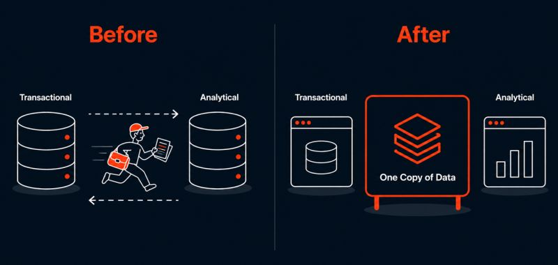

Engineers have been trying to solve this for 45 years.
Databricks just said they cracked it, by announcing LTAP. Let me explain what it is and how it works.
The problem
Imagine a busy restaurant. One team takes orders and processes payments. A completely separate team sits in a back office analyzing what sold, what to restock, what's trending.
To share information between them? A courier runs back and forth all day passing notes. That courier is your ETL, ELT, or CDC pipeline. And in data engineering, that courier is expensive, slow, and constantly needs monitoring, fixing, and maintenance.
For decades, companies have separated transactional systems from analytical systems. One database running your business. Another analyzing it. Keeping them in sync meant building pipelines that break, drift, and demand constant attention.
Now imagine this instead.
Both teams, the order takers and the analysts, share one single whiteboard in the middle of the kitchen. The moment an order is placed, it's on the whiteboard. The analysts can query the latest data without waiting for another copy to be built. No courier. No duplicate whiteboards going out of sync.
That's LTAP.
Instead of maintaining separate transactional and analytical databases, both engines operate on the same underlying Delta/Iceberg tables. A transactional engine handles writes. Spark handles large-scale analytics. Both reading from one shared source of truth, no pipelines required in between.

One copy of data, serving both workloads — instead of two databases and a courier between them.
The clever part is that Databricks didn't try to build one engine that does everything. Previous attempts tried that and compromised performance for both workloads. Instead, they unified at the storage layer. Each engine still does what it's best at, they just share the same data underneath.
For data engineers, the exciting part isn't just faster analytics, it's the possibility of eliminating an entire class of data movement pipelines that have traditionally been required to keep transactional and analytical systems in sync.
Early days, but genuinely worth watching.